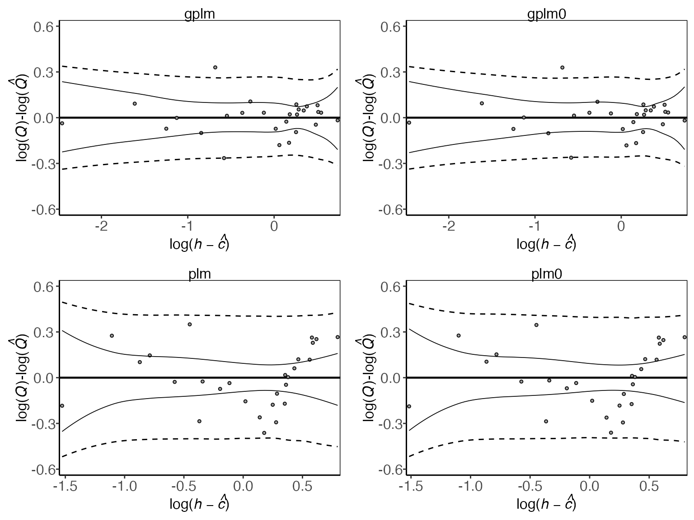
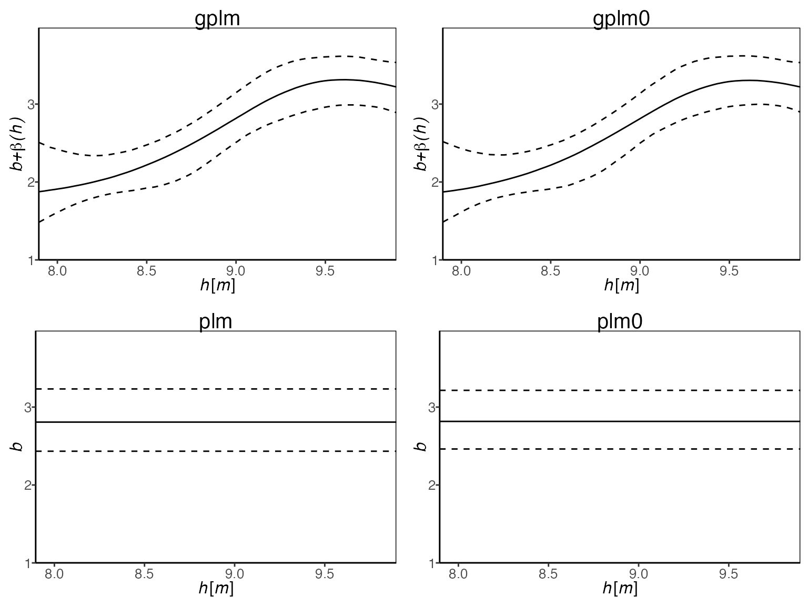
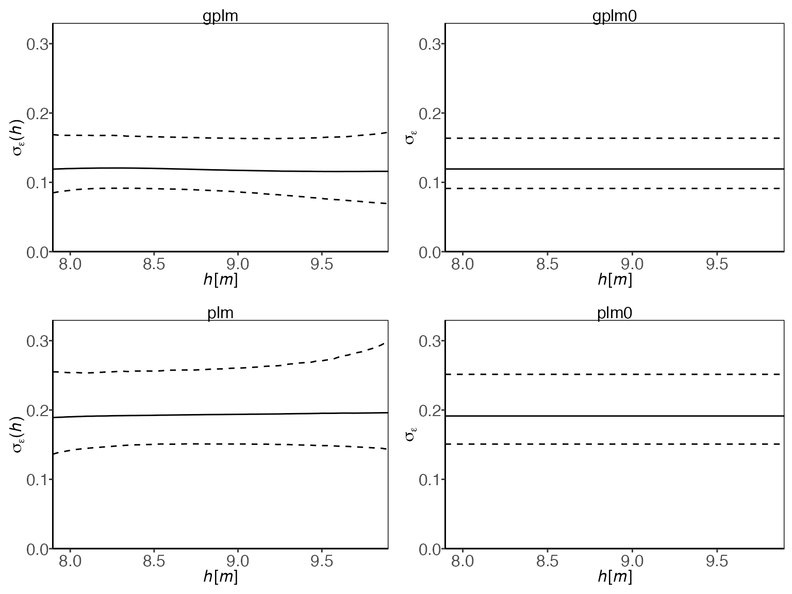
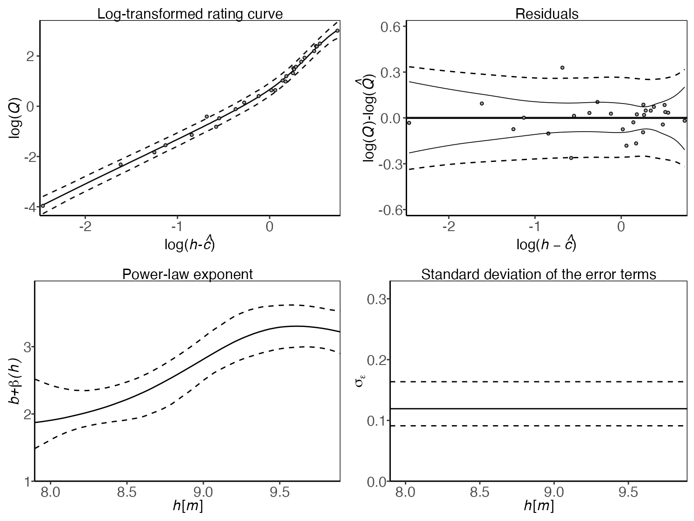

Tournament - Model comparison
Solvi Rognvaldsson, Rafael Daniel Vias, Birgir Hrafnkelsson and Axel Orn Jansson
Source:vignettes/tournament.Rmd
tournament.RmdThis vignette explores the ways you can compare the fit of the
different discharge rating curve models provided in the
bdrc package. The package includes four different models to
fit a discharge rating curve of different complexities. These are:
plm0() - Power-law model with a constant error variance
(hence the 0). This is a Bayesian hierarchical implementation of the
most commonly used discharge rating curve model in hydrological
practice.
plm() - Power-law model with error variance that varies
with water elevation.
gplm0() - Generalized power-law model with a constant
error variance (hence the 0). The generalized power law is introduced in
Hrafnkelsson et al. (2022).
gplm() - Generalized power-law model with error variance
that varies with water elevation. The generalized power law is
introduced in Hrafnkelsson et al. (2022).
To learn more about the models, see Hrafnkelsson et al. (2022). To learn about how to run the models on your data, see the introduction vignette. The tournament is a model comparison method that uses the Widely Applicable Information Criterion (WAIC) (see Watanabe (2010)) to select the most appropriate of the four models given the data. The WAIC consists of two terms, a measure of the goodness-of-fit, and a penalizing term to account for model complexity (effective number of parameters). The first round of model comparisons sets up two games between model types, gplm vs gplm0, and plm vs. plm0. The two comparisons are conducted such that if the WAIC of the more complex model ( gplm and plm, respectively ) is smaller than the WAIC of the simpler models ( gplm0 and plm0, respectively ) by a pre-specified value called the winning criteria (default value = 2), then it wins the game and is chosen as the more appropriate model. If not, the simpler model is chosen. The more appropriate models move on to the second round and are compared in the same way. The winner of the second round is chosen as the overall tournament winner and deemed the most appropriate model given the data. In each match, the difference in WAIC is defined as WAICWAICWAIC. A positive value of WAIC indicates that the more complex model is a more appropriate model, but the more complex model only goes through to the final round if WAIC is greater than the winning criteria.
To introduce the tournament function, we will use a dataset from the stream gauging station Krokfors in Sweden that comes with the package:
> library(bdrc)
> data(krokfors)
> krokfors
#> W Q
#> 1 9.478000 10.8211700
#> 2 8.698000 1.5010000
#> 3 9.009000 3.3190000
#> 4 8.097000 0.1595700
#> 5 9.104000 4.5462500
#> 6 8.133774 0.2121178
#> 7 8.569583 1.1580000
#> 8 9.139151 4.8110000
#> 9 9.464250 10.9960000
#> 10 8.009214 0.0984130
#> 11 8.961843 2.7847910
#> 12 8.316000 0.6631890
#> 13 8.828716 1.8911800
#> 14 9.897000 20.2600000
#> 15 7.896000 0.0190000
#> 16 9.534000 12.1000000
#> 17 9.114000 4.3560000
#> 18 8.389000 0.6200000
#> 19 8.999000 2.6800000
#> 20 9.099000 3.7310000
#> 21 8.502000 0.8930000
#> 22 8.873000 1.9000000
#> 23 8.240000 0.3200000
#> 24 9.219000 5.9000000
#> 25 9.271000 6.9000000
#> 26 8.370000 0.4420000
#> 27 9.431000 9.0000000Running a tournament
The tournament function is easy to use. All you need are two
mandatory input arguments: formula and data.
The formula is of the form y ~ x, where
y is the discharge in
ms,
and x is the water elevation in m (it is very important
that the data is in the correct units). The data argument
must be a data.frame including x and
y as column names. In our case, the dataset from Krokfors
has a column named Q which includes the discharge
measurements, and a column W which includes the water
elevation measurements. We are ready to run our first tournament:
> set.seed(1) # set seed for reproducibility
> t_obj <- tournament(Q ~ W, krokfors, parallel = TRUE, num_cores = 2) # by default parallel=TRUE and the number of cores is detected on the machine
#> Running tournament [ ] 0%
#>
#> Progress:
#> Initializing Metropolis MCMC algorithm...
#> Multiprocess sampling (4 chains in 2 jobs) ...
#>
#> MCMC sampling completed!
#>
#> Diagnostics:
#> Acceptance rate: 25.33%.
#> ✔ All chains have mixed well (Rhat < 1.1).
#> ✔ Effective sample sizes sufficient (eff_n_samples > 400).
#>
#> - gplm finished [============ ] 25%
#>
#> Progress:
#> Initializing Metropolis MCMC algorithm...
#> Multiprocess sampling (4 chains in 2 jobs) ...
#>
#> MCMC sampling completed!
#>
#> Diagnostics:
#> Acceptance rate: 31.14%.
#> ✔ All chains have mixed well (Rhat < 1.1).
#> ✔ Effective sample sizes sufficient (eff_n_samples > 400).
#>
#> - gplm0 finished [======================== ] 50%
#>
#> Progress:
#> Initializing Metropolis MCMC algorithm...
#> Multiprocess sampling (4 chains in 2 jobs) ...
#>
#> MCMC sampling completed!
#>
#> Diagnostics:
#> Acceptance rate: 25.66%.
#> ✔ All chains have mixed well (Rhat < 1.1).
#> ✔ Effective sample sizes sufficient (eff_n_samples > 400).
#>
#> - plm finished [==================================== ] 75%
#>
#> Progress:
#> Initializing Metropolis MCMC algorithm...
#> Multiprocess sampling (4 chains in 2 jobs) ...
#>
#> MCMC sampling completed!
#>
#> Diagnostics:
#> Acceptance rate: 36.04%.
#> ✔ All chains have mixed well (Rhat < 1.1).
#> ✔ Effective sample sizes sufficient (eff_n_samples > 400).
#>
#> - plm0 finished [================================================] 100%
#>
#> Tournament winner: gplm0The function runs the four models and then the tournament. If you
have already run the four different kinds of models, plm0,
plm, gplm0 and gplm, and they are
stored in objects, say plm0.fit, plm.fit,
gplm0.fit and gplm.fit, then you can
alternatively run the tournament very efficiently in the following
way:
Evaluating the tournament object gives you the name of the winner
For a more detailed summary of the results of the tournament, write
> summary(t_obj)
#> round game model lppd eff_num_param WAIC Delta_WAIC winner
#> 1 1 1 gplm 20.779382 6.870566 -27.817631 0.5570133 FALSE
#> 2 1 1 gplm0 20.370954 6.740645 -27.260617 NA TRUE
#> 3 1 2 plm 5.584163 4.257375 -2.653577 -0.4065514 FALSE
#> 4 1 2 plm0 5.628423 4.098359 -3.060129 NA TRUE
#> 5 2 3 gplm0 20.370954 6.740645 -27.260617 24.2004887 TRUE
#> 6 2 3 plm0 5.628423 4.098359 -3.060129 NA FALSENotice here that in round 1, gplm0 is favored over
gplm in the first game, and plm0 over
plm in the second. In the second round, gplm0
is deemed the tournament winner, i.e., the model that provides the best
simplicity and goodness-of-fit trade-off with the data at hand.
Comparing different components of the models
There are several tools to visualize the different aspects of the model comparison. To get a visual summary of the results of the different games in the tournament, write
![<em>A diagram showing the results of the power-law tournament. The diagram progresses from bottom (four initial models) to top (single winner). Each model's residual plot is shown at the bottom, with corresponding WAIC values above. Green WAIC values indicate the more parsimonious models in each comparison for these data. The first round selects gplm0 and plm0, which advance to the final comparison. gplm0 emerges as the tournament winner, indicated by its green WAIC value and the name at the top of the diagram.</em>](tournament_files/figure-html/unnamed-chunk-7-1.png)
An informative way of comparing the goodness-of-fit of the models is to compare the posteriors of the log-likelihood values. The values are often shown on the deviance scale, i.e., minus 2 times the log-likelihood. A lower value on the deviance scale implies a better fit to the data. To plot a boxplot of the posterior log-likelihood values for each model, we write

The red diamonds on the plot denote the WAIC values for the respective models. Next, to plot the four rating curves that were estimated by the different models, write
![A plot comparing the rating curves estimated by four models. The graph shows water level (stage) on the y-axis and discharge on the x-axis. Each model's estimated rating curve is represented by a solid line, with dotted lines showing the 95% prediction interval. This visualization enables assessment of model fit across the range of water levels, highlighting differences in predictive capabilities. Optimal performance is indicated by the solid line following the mean of observations and 95% of observations falling within the prediction interval.](tournament_files/figure-html/unnamed-chunk-9-1.png)
Another useful plot is the residual plot

The differences between the four models lie in the modeling of the power-law exponent, , and the error variance at the response level, . Thus, it is insightful to look at the posterior of the power-law exponent for the different models

and the standard deviation of the error terms at the response level

Finally, the panel option is useful to gain insight into all
different model components of the winning model, which in this case is
gplm0:

Customizing tournaments
There are a few ways to customize the tournament further. For example, if the parameter of zero discharge is known, you might want to fix that parameter to the known value in the model. Assume m is the known value of . Then you can directly run a tournament with the parameter fixed in all the models
One can also change the winning criteria (default value = 2) which
sets the threshold that the more complex model in each model comparison
must exceed, in terms of the model comparison criteria (default method
is "WAIC"). For example, increasing the value to
winning_criteria = 5 raises the threshold that the more
complex model must exceed to win a game, thus favoring model simplicity
more than if the default value of 2 were used. To re-evaluate a
previously run tournament using a different winning criteria, the most
efficient way is to input the list of stored model objects in the
existing tournament object. In our case we have the tournament stored in
t_obj, so we can write
> t_obj_conservative <- tournament(t_obj$contestants, winning_criteria = 5)
#>
#> Tournament winner: gplm0
> summary(t_obj_conservative)
#> round game model lppd eff_num_param WAIC Delta_WAIC winner
#> 1 1 1 gplm 20.779382 6.870566 -27.817631 0.5570133 FALSE
#> 2 1 1 gplm0 20.370954 6.740645 -27.260617 NA TRUE
#> 3 1 2 plm 5.584163 4.257375 -2.653577 -0.4065514 FALSE
#> 4 1 2 plm0 5.628423 4.098359 -3.060129 NA TRUE
#> 5 2 3 gplm0 20.370954 6.740645 -27.260617 24.2004887 TRUE
#> 6 2 3 plm0 5.628423 4.098359 -3.060129 NA FALSEThere is also an option to change the method used to estimate the
predictive performance of the models. The default method is
"WAIC" (see Watanabe (2010)) which is a fully Bayesian
method that uses the full set of posterior draws to calculate the best
possible estimate of the expected log pointwise predictive density.
Other allowed methods are "DIC" and "PMP". The
DIC (see Spiegelhalter (2002)) is similar to WAIC but instead of using
the full set of posterior draws to compute the estimate of the expected
log pointwise predictive density, it uses a point estimate of the
posterior distribution. Both methods "WAIC" and
"DIC" have a default value of 2 for the winning criteria.
We again run the efficient re-evaluation of the tournament
> t_obj_DIC <- tournament(t_obj$contestants, method = "DIC")
#>
#> Tournament winner: gplm0
> summary(t_obj_DIC)
#> round game model D_hat eff_num_param DIC Delta_DIC winner
#> 1 1 1 gplm -42.77317 6.063058 -30.647051 0.8498163 FALSE
#> 2 1 1 gplm0 -42.48795 6.345358 -29.797235 NA TRUE
#> 3 1 2 plm -11.34004 2.973852 -5.392337 -0.3058411 FALSE
#> 4 1 2 plm0 -11.47124 2.886532 -5.698178 NA TRUE
#> 5 2 3 gplm0 -42.48795 6.345358 -29.797235 24.0990569 TRUE
#> 6 2 3 plm0 -11.47124 2.886532 -5.698178 NA FALSEThe third and final method that can be chosen is "PMP",
which uses the posterior model probabilities, calculated with Bayes
factor (see Jeffreys (1961) and Kass and Raftery (1995)), to compare the
models, where all the models are assumed a priori to be equally likely.
When using the method "PMP", the value of the winning
criteria should be a real number between 0 and 1, since this represents
the threshold value that the posterior probability of the more complex
model has to surpass to be selected as the appropriate model. The
default value in this case for the winning criteria is 0.75, which again
slightly favors model simplicity. The value 0.75 should give similar
results to the other two methods with their respective default values of
2. The method "PMP" is not chosen as the default method
because the Bayes factor calculations can be quite unstable. Let’s now
use this method, but raise the winning criteria from 0.75 to 0.9
> t_obj_prob <- tournament(t_obj$contestants, method = "PMP", winning_criteria = 0.9)
#> ⚠ Warning: The Harmonic Mean Estimator (HME) is used to estimate the Bayes Factor for the posterior model probability (PMP), which is known to be unstable and potentially unreliable. We recommend using method "WAIC" (Widely Applicable Information Criterion) for model comparison instead.
#> Tournament winner: gplm0
> summary(t_obj_prob)
#> round game model marg_lik Post_prob winner
#> 1 1 1 gplm 2.560009e+04 4.537982e-01 FALSE
#> 2 1 1 gplm0 3.081285e+04 5.462018e-01 TRUE
#> 3 1 2 plm 2.659317e+00 9.259920e-01 TRUE
#> 4 1 2 plm0 2.125404e-01 7.400798e-02 FALSE
#> 5 2 3 gplm0 3.081285e+04 9.999137e-01 TRUE
#> 6 2 3 plm 2.659317e+00 8.629801e-05 FALSEWe see that the results of the tournament do not change in this
example, and the winner of the third and final game is still
gplm0.
References
Hrafnkelsson, B., Sigurdarson, H., Rögnvaldsson, S., Jansson, A. Ö., Vias, R. D., and Gardarsson, S. M. (2022). Generalization of the power-law rating curve using hydrodynamic theory and Bayesian hierarchical modeling, Environmetrics, 33(2):e2711. doi: https://doi.org/10.1002/env.2711
Jeffreys, H. (1961). Theory of Probability, Third Edition. Oxford University Press.
Kass, R., and A. Raftery, A. (1995). Bayes Factors. Journal of the American Statistical Association, 90, 773-795. doi: https://doi.org/10.1080/01621459.1995.10476572
Spiegelhalter, D., Best, N., Carlin, B., Van Der Linde, A. (2002). Bayesian measures of model complexity and fit. Journal of the Royal Statistical Society: Series B (Statistical Methodology) 64(4), 583–639. doi: https://doi.org/10.1111/1467-9868.00353
Watanabe, S. (2010). Asymptotic equivalence of Bayes cross validation and widely applicable information criterion in singular learning theory. Journal of Machine Learning Research, 11, 3571–3594.